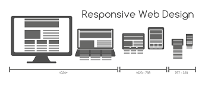

Proses Kreatif: Dari Ide Mentah Hingga Desain Final
Diposting oleh Nama Anda pada 10 Juli 2025 | Kategori: Desain UI/UX
Setiap proyek desain yang sukses dimulai dengan ide. Namun, mengubah ide mentah menjadi produk yang berfungsi dan estetis membutuhkan proses yang terstruktur. Berikut adalah langkah-langkah yang biasa saya ikuti:
1. Riset & Penemuan
Tahap ini melibatkan pemahaman mendalam tentang masalah yang akan diselesaikan, target audiens, dan lanskap kompetitif. Ini termasuk:
Riset Pengguna: Wawancara, survei, persona pengguna.
Analisis Kompetitor: Mempelajari apa yang berhasil dan tidak berhasil dari pesaing.
Brainstorming: Mengumpulkan ide-ide awal.
2. Konseptualisasi & Wireframing
Setelah riset, kita mulai membentuk struktur dasar produk. Wireframing adalah kunci di sini, membuat sketsa tata letak tanpa detail visual.
Ini membantu fokus pada fungsionalitas dan hierarki informasi.
3. Prototyping & Pengujian
Membangun prototipe interaktif memungkinkan pengujian awal dengan pengguna. Ini sangat penting untuk mengidentifikasi masalah kegunaan sebelum investasi besar dalam desain visual.
Ini adalah tahap di mana estetika mulai terbentuk – pemilihan warna, tipografi, ikonografi, dan elemen grafis. Proses ini seringkali iteratif, dengan banyak revisi berdasarkan umpan balik.
"Desain bukan hanya tentang tampilan dan rasa. Desain adalah bagaimana ia bekerja." - Steve Jobs
5. Implementasi & Peluncuran
Menerjemahkan desain menjadi kode atau produk final. Kolaborasi erat dengan developer sangat penting di sini untuk memastikan desain diimplementasikan dengan akurat.
Itulah sekilas tentang bagaimana saya mendekati setiap proyek. Proses ini memastikan hasil akhir tidak hanya indah, tetapi juga berfungsi dengan baik dan memenuhi kebutuhan pengguna.
Diposting oleh Nama Anda pada 5 Juli 2025 | Kategori: Pengembangan Web

Di era digital saat ini, pengguna mengakses internet dari berbagai perangkat, mulai dari desktop besar hingga smartphone mungil. Oleh karena itu, memastikan website Anda terlihat dan berfungsi optimal di setiap ukuran layar adalah sebuah keharusan. Inilah mengapa desain responsif web menjadi sangat krusial.
Apa Itu Desain Responsif Web?
Desain responsif adalah pendekatan di mana desain dan pengembangan web merespons perilaku dan lingkungan pengguna berdasarkan ukuran layar, platform, dan orientasi. Artinya, website Anda akan secara otomatis menyesuaikan tata letak, ukuran gambar, dan elemen lainnya agar sesuai dengan perangkat yang digunakan pengunjung.
Prinsip Dasar Desain Responsif:
Ada tiga pilar utama dalam membangun website yang responsif:
Grid Fleksibel (Fluid Grids): Menggunakan satuan relatif (persentase) daripada piksel tetap untuk lebar dan tinggi elemen. Ini memungkinkan elemen untuk menyesuaikan diri dengan ukuran viewport.
Gambar Fleksibel (Flexible Images): Gambar yang ukurannya juga disesuaikan secara relatif, sehingga tidak melampaui lebar wadahnya dan menyebabkan overflow di layar kecil.
Media Queries: Ini adalah fitur CSS3 yang memungkinkan Anda menerapkan gaya CSS yang berbeda berdasarkan karakteristik perangkat, seperti lebar layar, tinggi, orientasi, atau resolusi.
Mengapa Desain Responsif Itu Penting?
Tidak hanya sekadar tren, desain responsif membawa banyak manfaat:
Pengalaman Pengguna yang Lebih Baik: Pengunjung tidak perlu melakukan pinch-to-zoom atau scrolling horizontal. Konten disajikan dengan cara yang nyaman dibaca dan dinavigasi.
Peningkatan SEO (Search Engine Optimization): Google secara eksplisit merekomendasikan desain responsif sebagai konfigurasi terbaik untuk situs yang ramah seluler.
Efisiensi Biaya dan Waktu: Hanya perlu satu set kode dan satu URL, dibandingkan harus membuat versi terpisah untuk desktop dan seluler.
Jangkauan Audiens yang Lebih Luas: Anda dapat menjangkau pengguna di perangkat apa pun tanpa batasan.
Video: A practical guide to responsive web design.
Memulai dengan desain responsif mungkin terasa menantang, tetapi dengan memahami prinsip-prinsip dasarnya dan memanfaatkan framework seperti Bootstrap, Anda bisa membangun website yang tangguh dan adaptif untuk masa depan. Ingat, tujuan utamanya adalah melayani pengguna Anda di mana pun mereka berada dan perangkat apa pun yang mereka gunakan.
Diposting oleh Nama Anda pada 1 Juli 2025 | Kategori: Produktivitas, Gaya Hidup
Sebagai seorang individu kreatif independen, Anda mungkin sering merasa tenggelam dalam tumpukan ide, proyek, dan tenggat waktu yang tak ada habisnya. Keseimbangan antara kebebasan berkreasi dan tuntutan pekerjaan adalah tantangan besar. Untungnya, dengan strategi manajemen waktu yang tepat, Anda bisa tetap produktif, menjaga kesehatan mental, dan menghasilkan karya terbaik.
1. Kenali Puncak Produktivitas Anda
Setiap orang memiliki waktu di mana mereka paling fokus dan energik. Apakah Anda seorang "morning person" atau "night owl"? Identifikasi waktu puncak produktivitas Anda dan alokasikan tugas-tugas paling kompleks atau yang membutuhkan konsentrasi tinggi pada jam-jam tersebut. Gunakan waktu lainnya untuk tugas yang lebih ringan atau administratif.
Pagi (08:00 - 12:00) Ideal untuk desain kompleks, coding, atau menulis artikel mendalam.
Siang (13:00 - 17:00): Cocok untuk rapat, membalas email, atau tugas riset.
Malam (18:00 - selesai): Mungkin ideal untuk brainstorming atau tugas administratif bagi beberapa orang.
2. Teknik Pomodoro: Fokus Singkat, Istirahat Teratur
Teknik Pomodoro adalah metode manajemen waktu yang populer di mana Anda bekerja dalam interval waktu fokus (biasanya 25 menit), diikuti dengan istirahat singkat (5 menit). Setelah empat "pomodoro", ambil istirahat yang lebih panjang (15-30 menit).
Ini membantu melawan prokrastinasi dan menjaga otak tetap segar. Ada banyak aplikasi dan timer online yang bisa membantu Anda menerapkan teknik ini.
Video: How I Manage My Time - 10 Time Management Tips.
3. Prioritaskan dengan Matriks Eisenhower
Tidak semua tugas memiliki tingkat urgensi atau kepentingan yang sama. Matriks Eisenhower membantu Anda mengkategorikan tugas berdasarkan: Urgent & Important (Lakukan Sekarang), Important but Not Urgent (Jadwalkan), Urgent but Not Important (Delegasikan), dan Not Urgent & Not Important (Hapus).
Urgent
Not Urgent
Important
Lakukan Sekarang! (Krisis, Tenggat Ketat)
Jadwalkan! (Perencanaan, Pengembangan Diri)
Not Important
Delegasikan! (Gangguan, Beberapa Rapat)
Hapus! (Pengalih Perhatian, Hal Sepele)
4. Tetapkan Batasan yang Jelas
Sebagai independen, batas antara pekerjaan dan kehidupan pribadi sering kabur. Tetapkan jam kerja yang jelas dan patuhi itu. Beri tahu klien dan kolega kapan Anda tersedia. Jangan ragu untuk mengatakan "tidak" pada pekerjaan yang melebihi kapasitas Anda atau tidak sesuai dengan tujuan Anda.
5. Istirahat dan Isi Ulang Energi
Manajemen waktu bukan hanya tentang bekerja lebih keras, tetapi juga bekerja lebih cerdas dan memberi diri Anda waktu untuk memulihkan diri. Jadwalkan waktu istirahat, hobi, dan aktivitas fisik. Burnout adalah musuh kreativitas!
"Manajemen waktu adalah tentang mengatur diri Anda sendiri, bukan waktu. Waktu akan terus berjalan." - Peter Drucker
Menerapkan strategi ini mungkin membutuhkan sedikit eksperimen untuk menemukan apa yang paling cocok untuk Anda. Namun, dengan disiplin dan kesadaran, Anda akan menemukan bahwa Anda bisa mencapai lebih banyak dengan stres yang lebih sedikit.